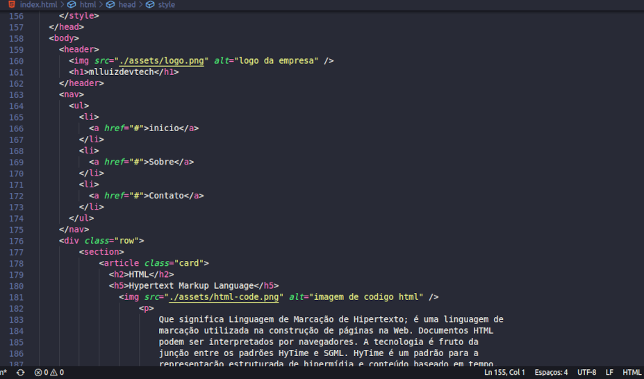

HTML
Hypertext Markup Language
Seu significado é Linguagem de Marcação de Hipertexto; é uma linguagem de marcação utilizada na construção de páginas na Web. Documentos HTML podem ser interpretados por navegadores. A tecnologia é fruto da junção entre os padrões HyTime e SGML. HyTime é um padrão para a representação estruturada de hipermídia e conteúdo baseado em tempo. Um documento é visto como um conjunto de eventos concorrentes dependentes de tempo (como áudio, vídeo, etc.), conectados por hiperligações (em inglês: hyperlink e link). O padrão é independente de outros padrões de processamento de texto em geral. SGML é um padrão de formatação de textos. Não foi desenvolvido para hipertexto, mas tornou-se conveniente para transformar documentos em hiper-objetos e para descrever as ligações.